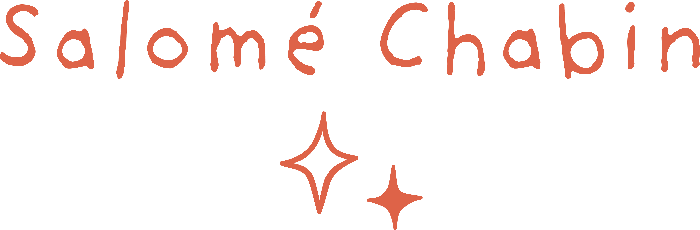
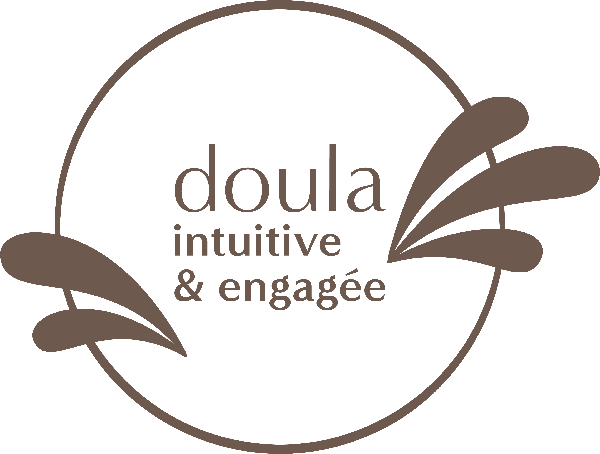

<!DOCTYPE html>
<html lang="fr"></html>
<head>
  <meta charset="utf-8">
  <meta name="viewport" content="width=device-width, initial-scale=1.0">
  <title>Un Tourbillon de Vie</title>
  <link rel="stylesheet" href="css/style.css">
  <script src="https://kit.fontawesome.com/33f488edca.js" crossorigin="anonymous"></script>
</head>

<body>
  <div id="main-container">
    <div id="nav-container">
      <nav>
        
        <div id="nav-links">
          <a href="home.html">Accueil</a>
          <div class="dropdown">
            <a href="prestations.html" class="drop-button">Prestations</a>
            <div class="dropdown-content">
              <a href="prestations.html#accompagnement-perinatal">Accompagnement périnatal</a>
              <a href="prestations.html#accompagnement-parental">Accompagnement parental</a>
              <a href="prestations.html#accompagnement-du-feminin">Accompagnement du féminin</a>
            </div>
          </div>
          <a href="contact.html">Contact</a>
        </div>
      </nav>
    </div>

    <div class="title">
      <h2>Contact & Cabinet</h2>
      <p>&Agrave; travers ces images, je te dévoile une partie de l'univers d'Un Tourbillon de Vie.</p>
    </div>

    <div id="contact-container">
      <div id="contact-carrousel"></div>
      <div id="contact-text">
        <p>Pour prendre rendez-vous ou pour plus d'informations, vous pouvez me contacter ici:</p>
        <p class="phone-mail-adress"><i class="fa-solid fa-phone"></i> <strong>0679209672</strong> <span>(SMS ou appel)</span><br><i class="fa-solid fa-envelope"></i> <strong>untourbillondevie@gmail.com</strong></p>
        <p>Le cabinet est ouvert du lundi au vendredi de 9h30 à 18h30, <strong>uniquement sur RDV.</strong></p>
        <p class="phone-mail-adress"><i class="fa-solid fa-house-chimney"></i> <strong>6 route de Saint-Robert, 33210 Pujols-sur-Ciron</strong></p>
        <p><Strong>&Agrave; très vite !</Strong></p>
        
      </div>
    </div>

    <section id="about-me">
      <h2>Un peu plus sur qui je suis.</h2>
      <div class="photo-tampon">
        
        
      </div>
      <p>Je suis Salomé Chabin, Doula des Femmes et des Familles.<br>J'ai, dans ma première Vie était Au Pair aux États-Unis pendant une année avant de m'orienter vers des études d'anglais. Mais, c'est très rapidement que j'ai senti qu'il me manquait quelque chose dans ma Vie pour m'épanouir complètement. J'ai connu l'Ayurvéda à travers des textes Sanskrit traduits en anglais et cela m'a passionnée. J'ai donc voulu me former à une pratique ayurvédique et j'ai suivi une formation de “Thérapeute ayurvédique en soins corporels et thérapeutiques”. Cela fut une belle étape de mon cheminement pour aller chercher exactement ce pour quoi et celles & ceux pour qui je devais oeuvrer.<br>Ma grossesse et mon enfantement m'ont ouvert les portes d'un Monde que je convoitais depuis de nombreuses années, celui de la périnatalité. Après avoir découvert le métier de doula au cours de mes lectures et grâce à la superbe préparation à la naissance de Karine Laseva alias Quantik Mama, j'ai mis un pied dans le Tourbillon en m'inscrivant au Séminaire « Approche quantique de la naissance: l'enfantement entre science et sacré » crée par Karine et là, révélation.<br>J'ai su que j'étais au bon endroit, que ça vibrait plus fort que jamais auparavant et que j'allais le faire.</p>

      <p>Je me suis donc formée pendant 18 mois chez LBDC Formation à Villenave-d'Ornon, en présentiel,  pour devenir “Accompagnante en périnatalité et en parentalité”.<br>Pendant ces 18 mois de formation, J'ai acquis de nombreuses connaissances aussi bien théoriques que pratiques qui m'ont permise de construire petit à petit ma posture professionnelle et de rencontrer en moi la Doula que je souhaitais être pour vous accompagner. J'ai aussi et surtout eu la grande chance d'être entourée d'une trentaine de Femmes incroyables et avec qui j'ai évolué tout au long de la formation grâce à tout ce que l'on a pu partager... MERCI à elles. </p>
      <p>J'ai participé à de nombreuses conférences & webinaires avec différent.e.s professionnel.les (sags-femme, naturopathe, ostéopathe, kinésithérapeute, doulas spécialisées,..) et je continue de me documenter & de m'informer quotidiennement. </p>
      <p>Mes formations:</p>
      <ul>
        <li>Accompagnante en Périnatalité et en Parentalité - LBDC Formation </li>
        <li>Séminaire “Approche Quantique de la naissance” - Quantik Mama</li>
        <li>Accompagner les Paternités - Cédric Rostein avec LBDC Formation </li>
        <li>Soin pré & post-natal et féminin - LBDC Formation</li>
        <li>Bain Enveloppé Mamatoto ® et Bain Rituel Mamatoto ® - Élise Bochereau avec LBDC Formation</li>
        <li>Monitrice de Portage - Camille Hanquiez - LBDC Formation</li>
        <li>Portage, Peau à peau & Prématurité - Keep Them Close</li>
        <li>Communication Gestuelle associée à la parole - LBDC Formation</li>
        <li>Massages bébés & bambins - LBDC Formation</li>
        <li>Soin inspiré du Rituel Rebozo - Élise Bochereau LBDC Formation</li>
        <li>Séminaire “Accompagner la naissance et la mort” - Isabelle Challut</li>
        <li>Yoni Steam - Maria Libera alias Madame Ocytocine -  Humanly</li>
      </ul>

      <p>Au delà de mes connaissances théoriques, je suis une Femme, un mère, une compagne, une fille, une soeur, une amie et je chemine comme vous dans toutes les facettes de ma vie de Femme. Je suis moi-même accompagnée par une kinésiologue, une psychologue, je participe régulièrement à des cercles de Femmes, à des voyages sonores et j'en apprends tous les jours sur moi-même et sur la Vie. <br>Au fil de mes accompagnements, mes propositions évoluent, s'affinent, rien n'est jamais figé et c'est grâce à vous que j'arrive à ressentir quand c'est JUSTE ou quand ça ne l'est pas.<br><strong>Vous me faites grandir et évoluer alors, merci pour ça !</strong></p>
    </section>
  </div>

  <script src="javascript/smoothScroll.js"></script>
</body>
